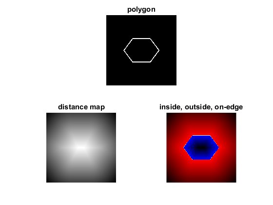

Point Polygon Test
In this sample you will learn how to use the OpenCV function cv.pointPolygonTest.
Sources:
create sequence of points to make a contour
r = 100; vert = r * bsxfun(@rdivide, [3 4; 2 6; 3 8; 5 8; 6 6; 5 4], [2 3]);
draw them in an image
sz = 4 * [r r]; src = zeros(sz, 'uint8'); src = cv.line(src, vert, circshift(vert,-1,1), 'Color',255, 'Thickness',3);
get the contours
[contours, hierarchy] = cv.findContours(src, 'Mode','Tree', 'Method','Simple'); contours = cellfun(@(C) cat(1,C{:}), contours, 'Uniform',false); assert(~isempty(contours));
calculate the distances to the contour
[X,Y] = meshgrid(1:sz(2), 1:sz(1));
tic
D = cv.pointPolygonTest(contours{1}, [X(:) Y(:)], 'MeasureDist',true);
toc
D = reshape(D, sz);Elapsed time is 0.191564 seconds.
depict the distances graphically
R = zeros(sz, 'uint8'); G = R; B = R;
R(D<0) = 255 - abs(D(D<0)*255 / abs(min(D(:))));
B(D>0) = 255 - D(D>0)*255 / abs(max(D(:)));
R(D==0) = 255; G(D==0) = 255; B(D==0) = 255;
out = cat(3, R, G, B);show results
subplot(211), imshow(src), title('polygon') subplot(223), imshow(D,[]), title('distance map') subplot(224), imshow(out), title('inside, outside, on-edge')